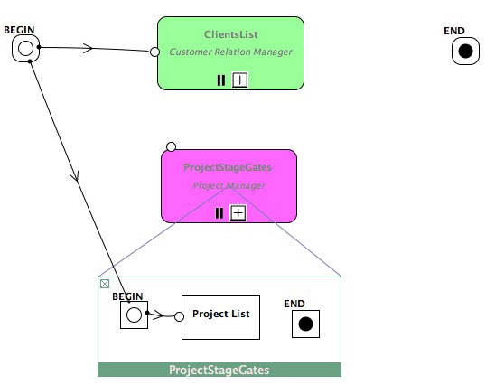
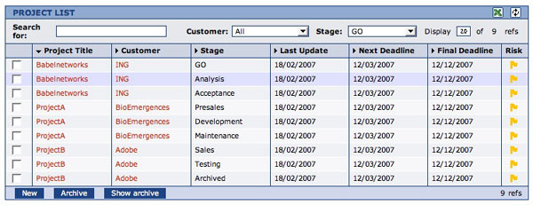
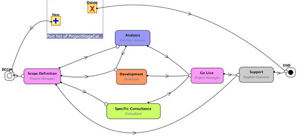

Sub-processes are associated with process instances and variables that
defines the embedded Business data.
There are three types of
sub-processes:
-
The single sub-process regroups a set of activities that share
the same Business data. They act as subroutines and can be replaced by
their set of activities.
-
The parallel sub-process executes several copies or instances
of the sequence of activities in parallel. Parallel sub-processes
create embedded business data context that can be different for every
instance executed in parallel.
-
The sequential sub-process executes the sequence of activities
several times in sequence. Sequential sub-processes create a different
embedded data context for each instances performed in sequence.
Sub-process are themselves Activities that monitor their
associated instances in management dashboards in their operation
level.

These
screens provide a general view on what is going on in the sub-process
instances. Basic management dashboards consist usually in process instance
lists with search and filter options.

Clicking
on the "+" sign opens the process instance level with the assiociated
subsequences of activities and embedded subprocesses with the two ports
New and Delete respectively creating and deleting the associated process
instance.
